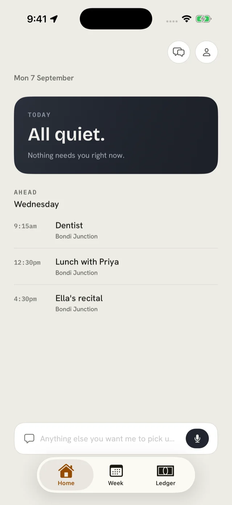
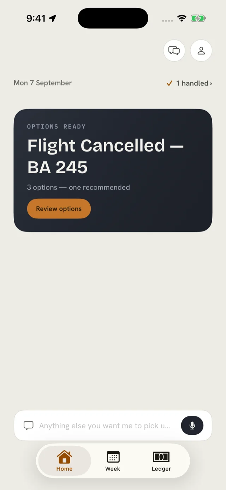
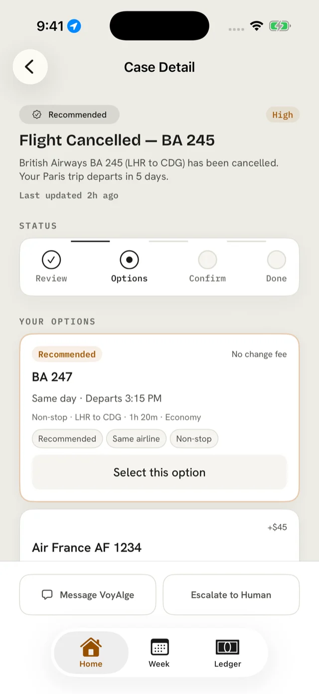
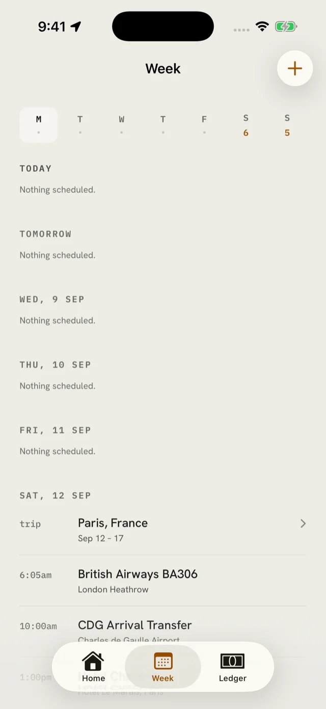
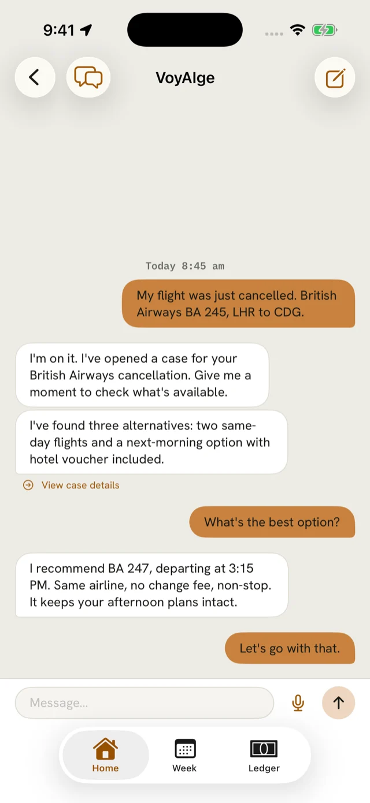
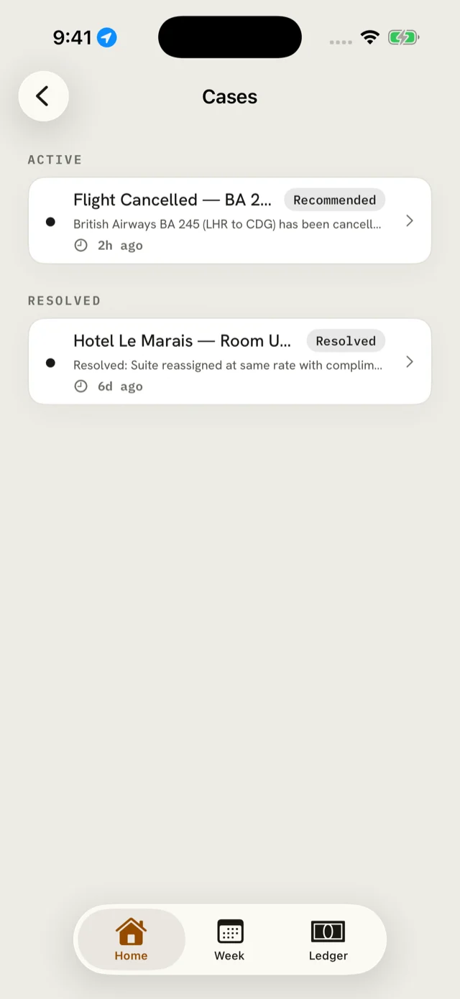

For the one who remembers
VOYAIGE runs your life in the background — catching what you’d miss, and handling what it can before you’ve noticed it needs handling.
It reads the week ahead against everything it already holds, and moves before you need to ask.
It is reading the week against what it already holds — the confirmations you forwarded, the calendar, the things you told it once. A quiet day reads as quiet, not as an empty container waiting to be filled in.
There is nothing to report. The case is there when you look — the situation stated plainly, the clock already running, and the work already started.
At most three ways forward, and the one it would take. It is never paid to recommend — the engine cannot see what pays more. You make one decision; it carries out the rest and writes down what happened.
Every other app leads with what you owe. This one leads with what has been handled, then what you need to know, then — briefly — what needs you. If that last list is ever the longest, it has become a to-do list and it has failed.



Four things, and they are the four that actually cost you: the anticipating, the deciding, the watching, and the remembering.
Forward the school email, the booking confirmation, the reminder you would have filed and never found again. It reads them, puts them on the week, and notices the two things that cannot both happen on Thursday.
Three options at most and one it recommends, judged against what you have already told it matters. It is never paid to recommend: the engine cannot see what pays more. That is structural, not a promise.
Flights, bookings, when to leave, the thing somebody promised to confirm and then did not. It goes back and looks again rather than assuming — and a confirmation only counts when there is something to show for it.
Anything that asks you the same questions every time is a stranger, and you don’t hand your life to a stranger. It keeps what worked last time, who to call, and how you like things done.
The watching is live: it reads what you give it and finds what’s coming. The going-and-doing-it part sits behind a bar it has to clear before we’ll claim it, rather than behind a launch date. And the beta is ten households on purpose.
And one specific thing it does not do: it does not yet work out on its own that a document expires before a trip you have already booked. It captures what you give it and watches that. The day it detects, we’ll say so — and not a day before.
A day with nothing on it should read as the promise being kept — never as an empty container implying something was left undone.



We’re opening VOYAIGE to ten households first and working with them closely. If you’re the one in your house who remembers everything, leave your name — we’ll tell you what’s working and what isn’t.
One email to confirm. Nothing after that until there’s something real to say.
We keep your name and email so we can write to you about the beta, and nothing else — no tracking, no third-party advertising. Ask at ryan@voyaige.app and it’s deleted; the confirmation email carries a one-tap link for the same thing.
Here’s to the ones who remember. The one who knows where the passports are. Nobody notices remembering — they only notice when you don’t.